Revision 3 · distribution, telemetry, color and direct documentation
These additions support the existing teaching route. The schedule, original notes, demo code and PowerPoint are unchanged. No plugin has been repackaged and no telemetry collection has been enabled.
| Topic | Recommendation and placement |
|---|
| Direct documentation screenshots | Highest priority: strengthen existing slides 7 and 10–12 with documentation → call → visible result. Actual UE 5.7 reference capture prepared below. |
| Distribute an editor tool as a plugin | Strong addition: 25A–25B, after paths and before Unreal questions/Blender handoff. Separate the Python-only example from the current native C++ plugin. |
| Color for UI, then shaders/VFX | Strong addition: 44B–44C after accessibility/shortcuts. Teach color properties, hierarchy and redundant cues, then preview color-space and scene-context questions. |
| Telemetry alongside observation | Strong addition: 46A before peer-test preparation. Explain what event counts can answer and what still requires watching a person. |
Use the existing section colors and transitions. These additions are proposals to expand preparation, not reasons to trim the existing topics to estimated times.
Documentation example · Plugin distribution · Color · Telemetry
Revision 3 proposal · Revise current 7 and 10–12; no mandatory new slide
Read the documentation, then predict the result
Proposed slide copy
- Identify the owning class and method
- Read the return type and selection scope
- Run the smallest example; inspect the result
Does this call return selected level Actors or Content Browser assets?
Current slide 10: actual content and preview
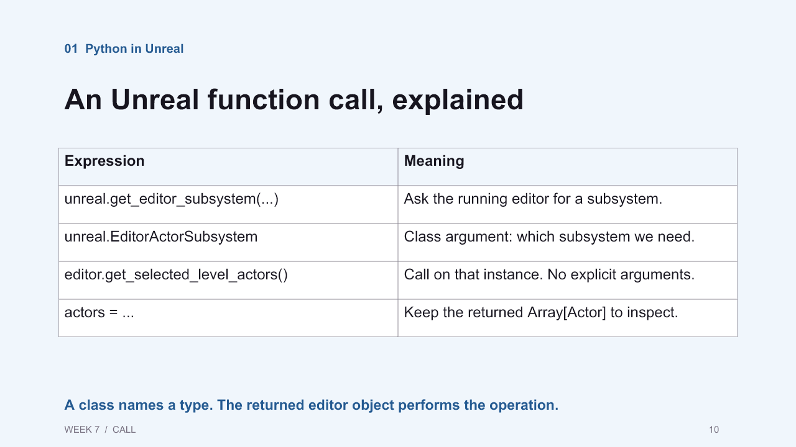
01 Python in Unreal
An Unreal function call, explained
WEEK 7 / CALL
10
Expression
Meaning
unreal.get_editor_subsystem(...)
Ask the running editor for a subsystem.
unreal.EditorActorSubsystem
Class argument: which subsystem we need.
editor.get_selected_level_actors()
Call on that instance. No explicit arguments.
actors = ...
Keep the returned Array[Actor] to inspect.
A class names a type. The returned editor object performs the operation.
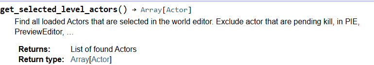
Epic Games · Unreal Python 5.7 API · browser capture, 14 October 2026. Full-page context · Live referenceimport unreal
editor = unreal.get_editor_subsystem(unreal.EditorActorSubsystem)
actors = editor.get_selected_level_actors()
print("Selected Actors:", len(actors))Expected: the count of selected editor-world Actors. Empty selection gives 0. This read-only example requires no scene reset.
Read-aloud notes
The documentation tells us this method belongs to EditorActorSubsystem and returns an array of Actors. Our editor variable refers to that subsystem. The call asks it for selected Actors in the editor world. Predict the count before running it, then compare the output with your selection. If you are trying to inspect selected asset files, you need a different API.
Editing direction / rationale
Keep slide 7’s documentation orientation. On slide 10, place this genuine documentation crop beside the existing call explanation. Keep the independently runnable code on slide 11 and the result on slide 12. Show the class, function and return type; put annotations outside the screenshot. Retain the full-page capture for context and use the detail crop for projection. The capture is documentation, not evidence that a particular student scene has run.
Revision 3 proposal · New 25A after current slide 25
From a project script to a reusable editor plugin
Proposed slide copy
- Give the tool a plugin descriptor and a clear entry point
- Put Python modules in the plugin’s Content/Python folder
- Declare dependencies and document the supported editor version
- Distribute an editor tool; verify it in a clean project
What would another artist need beyond the .py file?
Current slide 25: actual content and preview

01 Python in Unreal
UE07: Disk paths and asset paths
WEEK 7 / 07A
25
import unreal
from pathlib import Path
disk_folder = Path(unreal.Paths.project_dir()) / "Content"
object_path = "/Engine/BasicShapes/Cube.Cube"
mesh = unreal.load_asset(object_path)
print("Disk folder:", disk_folder)
print("Loaded object:", mesh.get_path_name() if mesh else None)
print("Content directory exists:", disk_folder.is_dir())
The filesystem path and Unreal object path name different things.
Run in Unreal. Complete example.
Does loading a mesh place it in the level?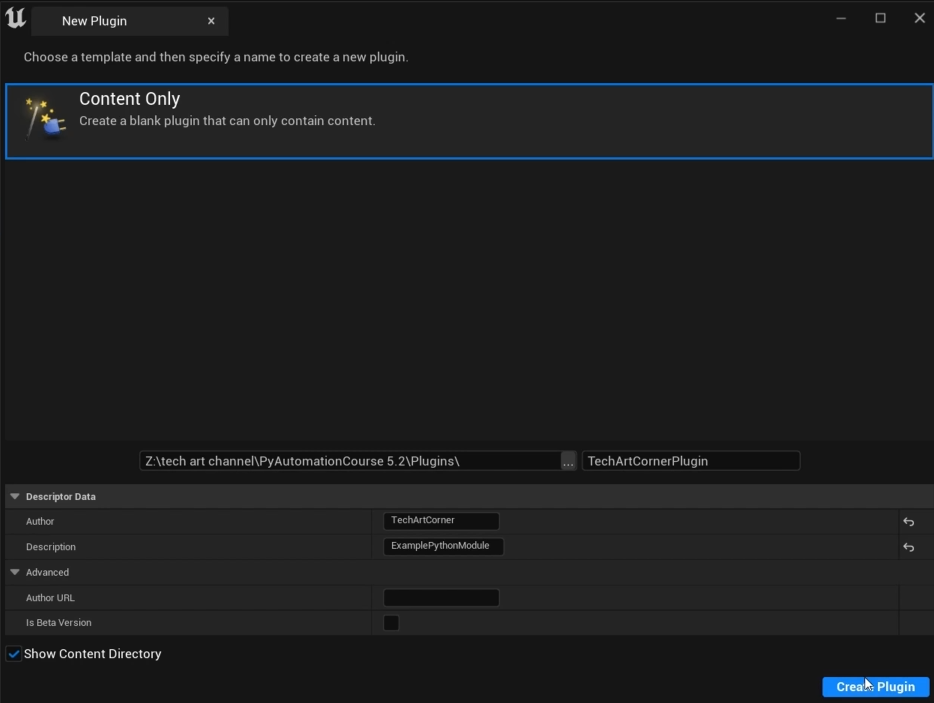
User-provided course capture. TechArtCornerPlugin / ExamplePythonModule are visible. Its path refers to a 5.2 course; exact capture build is unverified.Illustrative Python-only structure
Plugins/ArtistTools/
ArtistTools.uplugin
Content/Python/
artist_tools/__init__.py
artist_tools/tool.py
init_unreal.py # optional startup registration
README.mdRead-aloud notes
So far our scripts have lived in a project. A plugin gives a tool a named package that another project can enable. Unreal adds an enabled plugin’s Content/Python directory to its Python search path. The descriptor identifies the plugin and its dependencies. An optional init_unreal.py can register the entry point at startup. Here, shipping means delivering a tool to another artist’s editor; it does not turn editor Python into gameplay code.
Editing direction / rationale
Keep slide 25’s disk/asset-path explanation. Follow it with this structure and the supplied screenshot. Treat startup registration as optional and require repeated startup not to duplicate menus or callbacks. No example folder is claimed to be a tested distribution. Keep this before slide 26 questions and the brief Blender section.
Revision 3 proposal · New 25B after proposed 25A
A tool is ready when someone else can use it
Proposed slide copy
- Install and enable in a separate test project
- Check dependencies, menus and one representative operation
- Restart, repeat, then test the documented recovery
- Include version, setup, known limits and an uninstall path
Which dependency would be missing on a classmate’s machine?
| Route | What must travel |
|---|
| Python-only example | Descriptor, Python package, entry point, required assets and dependencies. Third-party libraries such as PySide require a deliberate compatible installation/distribution plan. |
| Current Week07Tools | Actual descriptor declares a Win64 C++ Editor module, PythonScriptPlugin and Niagara dependencies, and CanContainContent=false. Native code imports week07_tooling from outside this plugin. Copying this plugin folder alone is not established as a self-contained delivery. |
Actual descriptor · Native panel source
Read-aloud notes
A tool working on my machine is only the first check. Try the delivery in a clean project with no hidden paths from the development setup. Can another artist find the command, complete one task, inspect the result and recover? Then restart and repeat. Our native panel also contains C++ code, so its engine and platform compatibility are part of that test.
Editing direction / rationale
Use a two-column comparison: Python-only package versus this course’s native panel. Do not teach the Content Only template as a complete package for the existing C++ tool. Do not run or build the engine for this review.
Revision 2 · strongest topics for desktop artist tools
The order below is editorial priority, not a measured evidence score or a new class schedule. Natoli is a supporting voice. Core slides are anchored in public guidance and concrete desktop/game-development examples.
Evidence distinctions: a heuristic is a rule of thumb; platform guidance is a recommendation; a production case documents how one team worked. Sources repeating or citing the same principle are not independent experiments. No controlled study here validates our exact tool layout.
| Priority / topic | Current anchors | Support and decision |
|---|
| 1. Artist’s task and representation | 36, 37, 40 | Highest priority: direct artist-tool example plus general guidance. Natoli 01–05 reinforces the framing.
State the intended outcome and use terms the artist can act on. Do not expose each internal function as a separate user decision.
Jakob Nielsen · 10 Usability Heuristics · Jeff Stewart · Build Great Tools, GDC 2018 |
| 2. Scope, preview and recovery | 39, 41–44 | Highest priority: directly relevant to tools that modify assets. Multiple guidance sources plus production practice.
Show affected objects, explain whether anything changed, and provide a recovery route that the tool actually supports.
Jakob Nielsen · 10 Usability Heuristics · Jeff Stewart · Build Great Tools, GDC 2018 · Microsoft · Error Messages in Windows 7 |
| 3. Observe work and iterate | 45–46, peer-test lab | Highest priority: method guidance plus a documented game-development iteration from a separate organization.
Give a realistic task, observe a difficulty, make a targeted revision and retest. Do not substitute preference votes for task evidence.
Kate Moran · Usability Testing 101, NN/G · Etienne Palmer-Campbell · Mission Kontrol, GDC 2025 |
| 4. Grouping and visual hierarchy | 38–39, new 39A | Strong visual addition: NN/G and Microsoft agree on grouping; Stewart discusses it in a content-tool context.
Use spacing and alignment to distinguish target, proposed change and action. Test the arrangement with the actual task.
Aurora Harley · Proximity Principle in Visual Design, NN/G · Microsoft · Layout, Windows desktop guidance · Jeff Stewart · Build Great Tools, GDC 2018 |
| 5. Discoverability and expert efficiency | 44, new 44A | Strong desktop addition: supports both learning and repeated work; directly counters a phone-only interpretation.
Keep a visible route to commands while providing discoverable shortcuts for frequent actions. Check focus and scope.
Jakob Nielsen · 10 Usability Heuristics · Microsoft · Keyboard accelerators |
Leave in preparation notes: thumb reach, touch-size prescriptions, mobile gestures, architecture history and unsupported numerical claims. Dense desktop interfaces can support useful work; assess whether the information helps the current decision. Do not equate minimal appearance with usability.
Visual shortlist and credits · Reading guide · Prior review
Proposed live sequence
35 section divider → 36 purpose → 37 user/context → 38 alternative layouts → 39 group the task → 39A spacing example → 40 artist’s mental model → 41–44 state, implementation, recovery and accessibility → 44A discoverable shortcuts → 44B–44C color → 45 production feedback → 46 test a prediction → 46A telemetry → existing peer-test preparation and labs.
Keep the section color and title transition. Use sublabels “Understand the task,” “Make the task visible,” and “Test the result” within this section. Architecture history and mobile-only examples remain in preparation notes because they are less directly relevant to desktop artist tools.
Current slide 36 · stable anchor 14 · lessons 01–02, 05
Interface and experience
Current slide
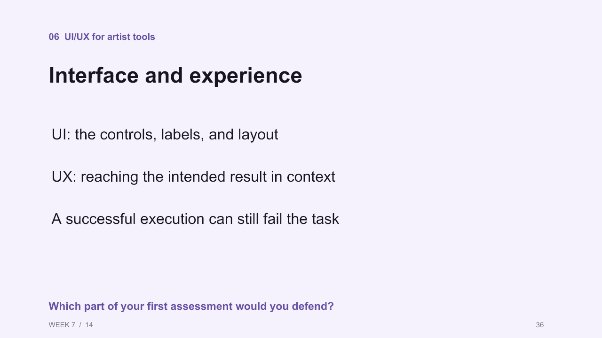
Exact visible text extracted from PPTX
06 UI/UX for artist tools
Interface and experience
WEEK 7 / 14
36
UI: the controls, labels, and layout
UX: reaching the intended result in context
A successful execution can still fail the task
Which part of your first assessment would you defend?
Proposed treatment
Keep title and the first two bullets; replace the final bullet and question. Keep the renamer example.
Interface and experience
- UI: the controls, labels, and layout
- UX: reaching the intended result in context
- Define success before judging the interface
What must change—and what must stay unchanged?
Existing visual / layout reference. Retain the current section color and visual; place new labels beside the image without covering controls.
Read-aloud notes
Think back to the renamer. The code can finish successfully while the artist still gets the wrong result. Name the intended change and what must remain untouched. Then ask how the interface makes those conditions visible.
Teaching rationale
The existing distinction is sound. Make success criteria visible before judging appearance.
Current slide 37 · stable anchor 14B · lessons 01–02, 05
User stories
Current slide
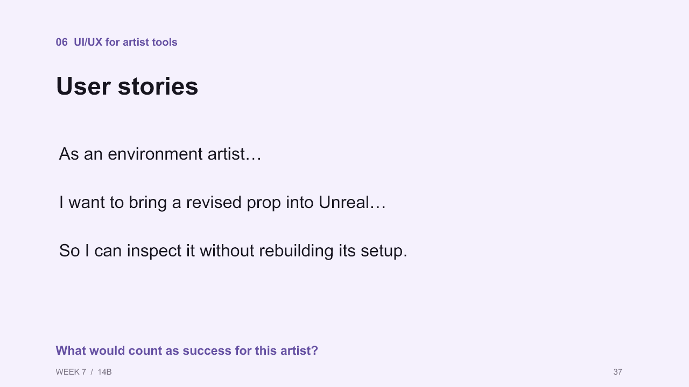
Exact visible text extracted from PPTX
06 UI/UX for artist tools
User stories
WEEK 7 / 14B
37
As an environment artist…
I want to bring a revised prop into Unreal…
So I can inspect it without rebuilding its setup.
What would count as success for this artist?
Proposed treatment
Keep title and user-story bullets; replace question and extend notes with context.
User stories
- As an environment artist…
- I want to bring a revised prop into Unreal…
- So I can inspect it without rebuilding its setup.
What would the artist inspect to confirm success?
Existing visual / layout reference. Retain the current section color and visual; place new labels beside the image without covering controls.
Read-aloud notes
This story gives us a role, a goal and a benefit. Now add context: what is selected, which project is open, and what happens immediately before and after this task? A useful reference tool may solve a different problem. Borrow a pattern only when you can explain why it fits this artist.
Teaching rationale
Adds context without duplicating the existing user-story lesson.
Current slide 38 · stable anchor 14D · lessons 03–05
Two layouts for the same task
Current slide

Exact visible text extracted from PPTX
06 UI/UX for artist tools
Two layouts for the same task
WEEK 7 / 14D
38
Illustrative sketches · neither layout is a tested recommendation
Which prediction could a paper test resolve?
Proposed treatment
Keep title, illustration and its untested-sketch caption; replace question. Add this narration.
Two layouts for the same task
Which layout makes the target and next action easier to identify?
Existing visual / layout reference. Retain the current section color and visual; place new labels beside the image without covering controls.
Read-aloud notes
Both sketches can perform the same operation. That does not make them equally suitable for every artist. Predict which layout helps a new user find the target and which helps an experienced user repeat the task. Those are hypotheses. Watch someone use the sketch before calling either one better.
Teaching rationale
Shows that technical function alone does not prescribe a single layout.
Current slide 39 · stable anchor 15 · lessons 04–05, 09–10
Layout follows the task
Current slide
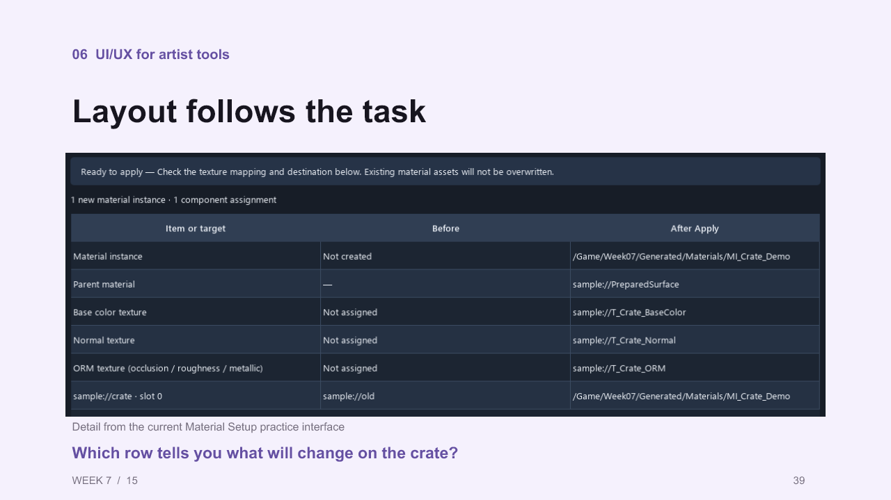
Exact visible text extracted from PPTX
06 UI/UX for artist tools
Layout follows the task
WEEK 7 / 15
39
Detail from the current Material Setup practice interface
Which row tells you what will change on the crate?
Proposed treatment
Keep title, existing material-preview capture and crop. Replace question and notes; add three short callouts beside the capture.
Layout follows the task
- Target and scope
- Proposed change
- Next action
Which information belongs together?
Existing visual / layout reference. Retain the current section color and visual; place new labels beside the image without covering controls.
Read-aloud notes
Find the target, then find what will change. The spacing and labels should help you connect those two pieces of information. A layout follows the task when it supports the artist’s decisions in context. That includes how they recognize controls, inspect consequences and recover—not just the order of our Python functions.
Teaching rationale
Adds a concrete visual-design reading while keeping colleagues’ material implementation outside this lesson.
Proposed addition 39A · after current slide 39 · lessons 09–10
Spacing tells us what belongs together
Current state
No dedicated balance/grouping slide. Slide 39 shows the material preview; slide 40 moves to the artist’s mental model.
Existing tool captureUse this capture as the starting point for a future annotated slide. No redesigned tool or new capture is claimed here.
Proposed slide copy
- Keep related controls together
- Separate target, changes and actions
- Give the next decision clear visual priority
Where would you add space—and why?
Layout: one large existing capture, with three numbered grouping callouts. Invite a prediction before showing a proposed rearrangement. Use text and outlines as well as color.
Read-aloud notes
Look for groups before reading every control. Which items appear to belong together? Now find the target, the proposed changes and the next action. If those groups are unclear, we can try changing spacing or alignment before rebuilding the whole tool. What would you change, and what would you watch for in the next test?
Teaching rationale
This is the clearest missing visual-design concept. It gives students a small, testable revision rather than a broad instruction to make the UI nicer.
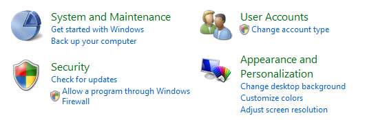
Microsoft · Windows desktop Layout guidance · Original page · Original imageUse on 39A: Show the existing desktop control groups first; ask what belongs together. Follow with the course material-preview capture. These are separate examples, not a matched before/after.
Provenance / reuse
Microsoft screenshot guidance: retain the original image; resize only. Historical Windows UI, not current Unreal styling.
Current slide 40 · stable anchor 14F · lessons 05
The artist’s model of the work
Current slide

Exact visible text extracted from PPTX
06 UI/UX for artist tools
The artist’s model of the work
WEEK 7 / 14F
40
Jeff Stewart · Vicarious Visions · GDC 2018 · PDF p.35
Would an artist rather edit a duration or two unrelated events?
Proposed treatment
Keep title, GDC visual, credit and question. Add a compact three-label explanation; replace notes with this script.
The artist’s model of the work
- Implementation: spawn and kill events
- Artist’s goal: control VFX duration
- Interface: a duration control
Would an artist rather edit a duration or two unrelated events?
Existing visual / layout reference. Retain the current section color and visual; place new labels beside the image without covering controls.
Read-aloud notes
The implementation is what the system does internally. The artist’s mental model is how they understand the work. The interface represents that work. Here, duration brings two underlying events into one meaningful decision. Technical detail remains useful when it helps the artist make the next decision.
Teaching rationale
The existing production example already teaches this well; the terms make the relationship explicit.
Current slide 41 · stable anchor 15A · high priority
State and feedback
Current slide

Exact visible text
06 UI/UX for artist tools
State and feedback
WEEK 7 / 15A
41
Detail from the current Material Setup practice interface
What would you inspect after the completion message?
Proposed treatment
Keep title, capture and crop. Replace question and add the three short statements beside the image.
- Show what completed
- Keep the affected targets inspectable
- Explain the next available action
What result would you inspect before moving on?
Read-aloud notes
The message says the operation completed. Now inspect the affected targets. Does the visible result match what you intended? A useful status message tells us which operation finished and what we can do next; it does not certify every other tool or bridge.
Current slide 43 · stable anchor 15D · high priority
An error should support recovery
Current slide
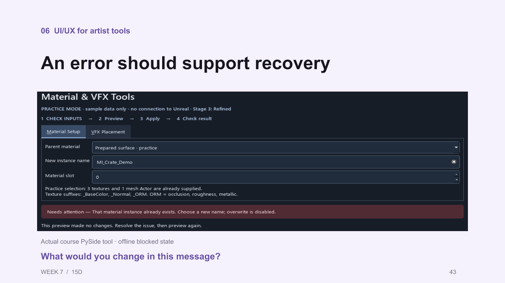
Exact visible text
06 UI/UX for artist tools
An error should support recovery
WEEK 7 / 15D
43
Actual course PySide tool · offline blocked state
What would you change in this message?
Proposed treatment
Keep title and course blocked-state capture. Add the three message checks and replace the question. The Microsoft screenshot is an optional comparison, not a replacement theme.
- Name the problem
- Identify the affected input
- Offer a workable next step
Could a classmate continue without reading the code?
Read-aloud notes
Read this message without assuming you know the code. What failed, which input needs attention, and what can you do now? Keep detailed diagnostics available, but give the artist an actionable explanation. Do not promise Undo unless that operation actually supports it.
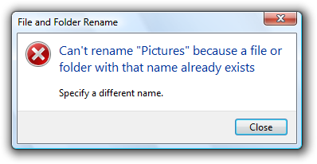
Microsoft · Error Messages in Windows 7 · Original page · Original imageUse on 43: Use this historical rename-error screenshot beside the existing course blocked-state capture. Ask what failed and what action the user can take. Keep annotations outside the screenshot.
Provenance / reuse
Microsoft screenshot guidance: retain original pixels; resize only. Historical message example, not a visual template.
Current slide 44 · stable anchor 15B · lessons 07–08
Recovery and accessibility
Current slide

Exact visible text extracted from PPTX
06 UI/UX for artist tools
Recovery and accessibility
WEEK 7 / 15B
44
# Existing PySide view implementation
self.preview.setAccessibleName(
"Selected Actors change preview"
)
Review consequential changes before applying them
Test the recovery path you actually offer
Keep focus, labels, and status understandable
Requires the surrounding widget class.
Could a classmate recover without help?Proposed treatment
Keep title, existing bullets, code excerpt and question. Add this explanation in notes; do not add a universal pixel rule.
Recovery and accessibility
- Review consequential changes before applying them
- Test the recovery path you actually offer
- Keep focus, labels, and status understandable
Could a classmate recover without help?
Existing visual / layout reference. Retain the current section color and visual; place new labels beside the image without covering controls.
Read-aloud notes
A small interface still needs visible actions and understandable labels. Try the keyboard and look for focus. Check whether controls are easy to select in the actual window size. Mobile thumb-reach guidance does not directly describe a desktop Unreal panel. The accessible name shown here is one useful step; it is not a complete accessibility test.
Teaching rationale
Transfers discoverability and input constraints without importing unsupported mobile measurements.
Proposed addition 44A · after current slide 44
Visible commands, faster repetition
Current state: slide 44 covers recovery/accessibility; there is no dedicated desktop-shortcut example here. Keep that coverage intact.
Proposed slide copy
- Keep a visible command for learning
- Show the shortcut beside it
- Make selection and keyboard focus clear
Which repeated action deserves a shortcut—and what should it affect?
Read-aloud notes
An artist learning a tool needs to find the command. An artist repeating the task may prefer a shortcut. We can support both. Show the shortcut where the command is learned, and make its scope predictable. A key press should not unexpectedly act on a different panel or selection. Which repeated action in your tool would benefit, and how would you test its focus behavior?
Editing direction
Use the menu screenshot at its natural aspect ratio, with the three points beside it. This is a platform example; it does not claim these shortcuts exist in our tools. Preserve the section color and established schedule.
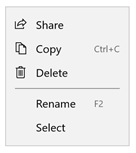
Microsoft · Keyboard accelerators documentation · Original page · Original imageUse on 44A: Place the full menu screenshot on the left; on the right ask students to identify the visible command and its shortcut. Do not present these keys as implemented in the course tool.
Provenance / reuse
Microsoft screenshot guidance: retain original pixels; resize only.
Revision 3 proposal · New 44B after proposed 44A
Color has a job in the interface
Proposed slide copy
- Hue distinguishes color families
- Saturation changes color intensity
- Value changes the HSV brightness coordinate
- Use contrast and labels to establish priority and state
If the colors disappeared, would the status still make sense?
Current slide 44: actual content and preview
06 UI/UX for artist tools
Recovery and accessibility
WEEK 7 / 15B
44
# Existing PySide view implementation
self.preview.setAccessibleName(
"Selected Actors change preview"
)
Review consequential changes before applying them
Test the recovery path you actually offer
Keep focus, labels, and status understandable
Requires the surrounding widget class.
Could a classmate recover without help?Illustrative classroom comparison, not a tool capture:
Color alone: the meaning is unspecified.
⊘ Blocked — select a target✓ Ready — preview changesText supplies meaning and a next action.
Direct online visual candidates: Adobe Spectrum, “Communicating with color”: labeled error vs red border alone. Keep the source credit and both states together; place explanatory labels outside the source image.
Read-aloud notes
Hue, saturation and value give us a useful vocabulary for changing a color. They are not a complete model of how bright a color looks. For the interface, choose what should attract attention and keep the meaning consistent. A blocked state needs a label or icon as well as color. Check the actual foreground and background pair, especially when moving between light and dark panels.
Editing direction / rationale
Keep slide 44’s accessibility content. Add this color vocabulary and a simple labeled-state comparison. Do not replace the course’s existing lens colors or invent universal emotional meanings for hues. Adobe’s linked examples provide direct UI references; no screenshot is fabricated.
Revision 3 proposal · New 44C after proposed 44B; bridge to later shaders/VFX
The same color choice meets a different rendering context
Proposed slide copy
- Choose a dominant palette and a purposeful accent
- Inspect color relationships against the actual background
- Distinguish HSV value from perceived brightness
- For shaders and VFX, check color space, lighting and exposure
Would the same RGB numbers guarantee the same visible result?
Open the direct Unreal color-picker screenshot and control descriptions. Retain the engine-version caption. Avoid projecting a tiny full-page documentation screenshot when the relevant controls can be shown clearly.
Read-aloud notes
In a tool window, color can identify an action or state. In a material or effect, it also contributes to the visual result. A palette is a starting relationship, not a guarantee of readability. Later we will inspect how color values are interpreted and how the scene changes their appearance. For now, notice that a color picker offers different representations; identical-looking numbers are not enough to establish identical color handling.
Editing direction / rationale
Use an actual Unreal color-picker reference with RGB/HSV and sRGB controls visible. The verified detailed reference is UE 4.27, so label it historical; do not imply it is a current 5.7 capture. Keep palette selection as a testable artistic choice. Defer transfer functions, tonemapping and detailed material implementation to the later shader/VFX lessons. A same-scene before/after visual is a future capture, not supplied evidence.
Current slide 45 · stable anchor 16C · high priority
Feedback changes the interface
Current slide
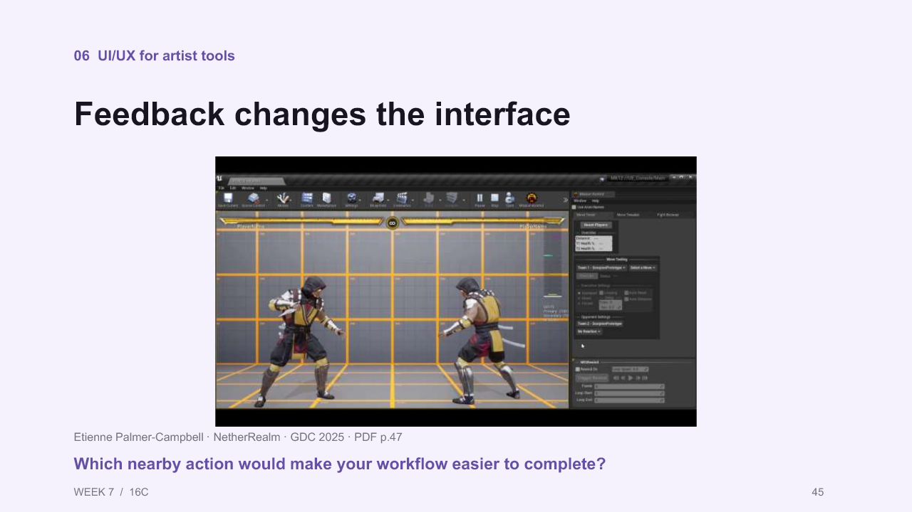
Exact visible text
06 UI/UX for artist tools
Feedback changes the interface
WEEK 7 / 16C
45
Etienne Palmer-Campbell · NetherRealm · GDC 2025 · PDF p.47
Which nearby action would make your workflow easier to complete?
Proposed treatment
Keep title, GDC screenshot and credit. Add the three statements and replace the question; retain the production context.
- Observe the surrounding workflow
- Revise the tool around the task
- Test the revised operation
What did the team learn that the original feature list missed?
Read-aloud notes
Mission Kontrol initially met its planned requirements. Feedback then led to controls for both players and frame stepping inside the tool. The user was working without a gamepad, so the nearby action mattered. For your test, watch the work immediately before and after the button press.
Current slide 46 · stable anchor 16E · lessons 09–10, applied to the existing testing method
A test produces the next question
Current slide

Exact visible text extracted from PPTX
06 UI/UX for artist tools
A test produces the next question
WEEK 7 / 16E
46
Course testing loop · a possible explanation is not yet a finding
What questions remain before you write the peer-test task?
Proposed treatment
Keep title, testing-loop visual and caption. Replace question; add the following narration.
A test produces the next question
Which single layout change would you test next? What questions do you have?
Existing visual / layout reference. Retain the current section color and visual; place new labels beside the image without covering controls.
Read-aloud notes
Suppose your tester cannot find the destination. That is an observation. Perhaps its label is unclear, or perhaps it is visually grouped with the wrong controls. Choose one explanation and make one change. Give the same task to a fresh tester and watch again. A cleaner-looking screen is a proposal until we have evidence about how it works.
Teaching rationale
Converts visual preference into an observable test without claiming the Udemy examples are measured evidence.
Revision 3 proposal · New 46A after current slide 46
Telemetry shows patterns; observation explains difficulties
Proposed slide copy
- Start with a question about the workflow
- Record a few meaningful events and outcomes
- Compare counts with observed task success
- Use a pattern to choose the next test
If Apply is rarely used, what could explain that?
Current slide 46: actual content and preview
06 UI/UX for artist tools
A test produces the next question
WEEK 7 / 16E
46
Course testing loop · a possible explanation is not yet a finding
What questions remain before you write the peer-test task?
Synthetic event design — no real measurements| Event | Minimal useful fields | Question |
|---|
| preview_finished | run_id, target_count, elapsed_ms | Did a preview finish, and how long did its operation take? |
| apply_blocked | run_id, reason_code | Which preconditions repeatedly prevent action? |
| apply_finished | run_id, outcome, changed_count | Did the operation report completion? |
| recovery_used | run_id, recovery_kind | Which recovery paths are being used? |
Count distinct runs with a successful apply out of runs with a valid preview; report cancellations and failures separately. Repeated clicks are not distinct tasks. Confirm task success by inspecting the result. A few class tests provide useful observations, not reliable population percentages.
Read-aloud notes
Telemetry is instrumented information about tool use. It can tell us how often a step occurs, where an operation fails, or how long the code runs. It cannot tell us on its own why an artist hesitated or whether the final asset was correct. A low Apply count could mean a confusing preview, an intentional cancellation, or very little need for the tool. Watch the task before choosing a fix.
Editing direction / rationale
Keep slide 46’s observation–hypothesis–retest loop and place this extension before peer-test preparation. Use the synthetic event table below, visibly labeled. No collection is implemented by this review. If implemented later, begin with explicit local test logging, anonymous run IDs and task-relevant fields; exclude personal names and asset paths unless there is a justified need. Keep code duration distinct from end-to-end task time.
Source example and preparation depth
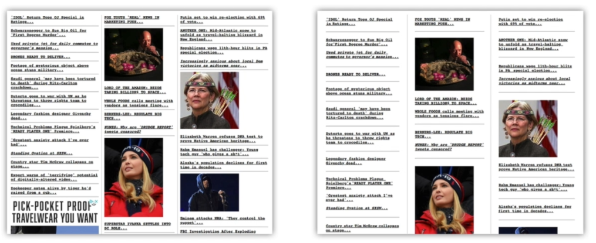
Source: supplied lesson 10 notes, Joe Natoli’s Udemy course. Preserved source screenshot; not a new capture or measured usability result. Keep this as instructor background and use the course-tool capture for the main student example.
Lesson 06 needs the correct transcript. Lesson 09’s described magazine screenshot is not embedded in the supplied notes. Revision 2 adds independently consulted public sources and credited visual examples. No live software compatibility testing was performed.
Online visuals selected for the review
Four newly sourced images are stored locally with their original pixels and credits. Existing GDC visuals remain the main production examples. Each visual has a specific teaching job; none is a generated interface.
Microsoft · Windows desktop Layout guidance · Original page · Original imageUse on 39A: Show the existing desktop control groups first; ask what belongs together. Follow with the course material-preview capture. These are separate examples, not a matched before/after.
Provenance / reuse
Microsoft screenshot guidance: retain the original image; resize only. Historical Windows UI, not current Unreal styling.
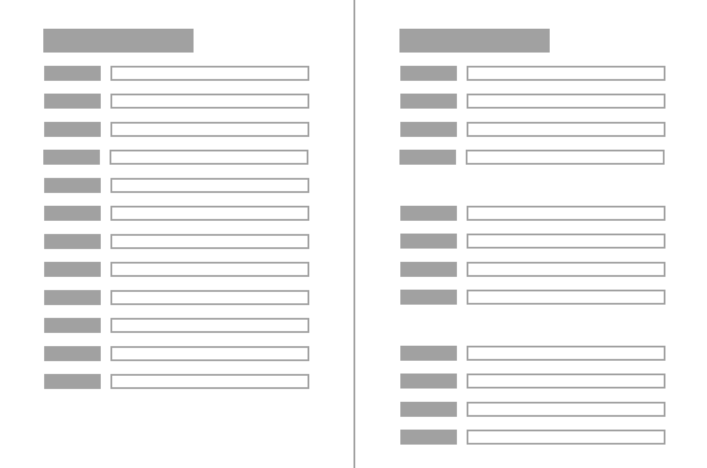
Aurora Harley · Nielsen Norman Group · Proximity Principle in Visual Design (2020) · Original page · Original imageUse on 39A alternative: Use as an alternative conceptual opener if the desktop screenshot is too small. Compare grouping, then transfer to artist-tool controls. This is a schematic web form, not a measured usability result.
Provenance / reuse
NN/G Articles and Videos terms permit credited educational illustrations. Preserve author, organization and original article link.
Use on 44A: Place the full menu screenshot on the left; on the right ask students to identify the visible command and its shortcut. Do not present these keys as implemented in the course tool.
Provenance / reuse
Microsoft screenshot guidance: retain original pixels; resize only.
Use on 43: Use this historical rename-error screenshot beside the existing course blocked-state capture. Ask what failed and what action the user can take. Keep annotations outside the screenshot.
Provenance / reuse
Microsoft screenshot guidance: retain original pixels; resize only. Historical message example, not a visual template.
 Jeff Stewart · Vicarious Visions · GDC 2018 · PDF p.35. Existing course extract.
Jeff Stewart · Vicarious Visions · GDC 2018 · PDF p.35. Existing course extract.Use on slide 40: compare the contiguous VFX cue with underlying spawn/kill events. Original presentation
 Etienne Palmer-Campbell · NetherRealm · GDC 2025 · PDF p.47. Existing course extract.
Etienne Palmer-Campbell · NetherRealm · GDC 2025 · PDF p.47. Existing course extract.Use on slide 45: explain the feedback-driven addition of adjacent controls. Original presentation
New screenshot assets remain raster originals, not editable vector masters. Preserve their credits. Rights notes: NN/G article illustrations · Microsoft screenshot guidance. GDC extracts retain existing provenance; no new reuse license is asserted.
Reading guide and source boundaries
Heuristic guidance. Read heuristics 1–3, 5–7 and 9. Supports familiar terminology, visible state, prevention, recovery and expert shortcuts. These are broad heuristics, not proof of a particular layout.
Production practice. Read PDF pp.25–26, 33–36 and 40–46: grouping and adjacent workflow, content models, undo, preview and recovery. Stewart explicitly cites Nielsen on p.33: this is a production application of that principle, not an independent experiment.
Production case. Read PDF pp.45–49. QA feedback led to both-player controls and frame stepping in the tool. The case documents an iteration, not a controlled comparison or a Python implementation.
Research-method guidance. Read Elements of Usability Testing, Tasks and Participants. Supports realistic tasks and observing behavior while avoiding coaching. Pair with the production case and local peer-test observations.
Visual-design explanation. Read Close Proximity Indicates Relatedness and the grouped-form illustration. Supports using spacing to communicate relationships. It does not supply a measured gain for our Unreal interface.
Desktop platform guidance. Read Grouping, Alignment and sizing/resizing guidance. Use relationships and hierarchy; do not import legacy Windows styling, numeric spacing rules or group-count limits into Qt/Slate as universal requirements. The page identifies its Windows 7 origin.
Desktop platform guidance. Read When to use keyboard accelerators, Scoped accelerators and menu-label examples. Supports discoverable shortcuts for frequent actions and explicit focus scope. The API examples are Windows APIs, not PySide or Unreal code.
Historical desktop guidance. Read Characteristics of good error messages. Supports specific, actionable explanations. Use the message structure, not its dated visual styling; retain diagnostic detail separately when needed.
Consulted 14 October 2026. Revision 1 compiled the supplied notes; revision 2 adds corroboration, desktop priorities, four sourced visual candidates, three additional current-slide treatments and proposed 44A. Original transcripts and the PowerPoint remain unchanged.